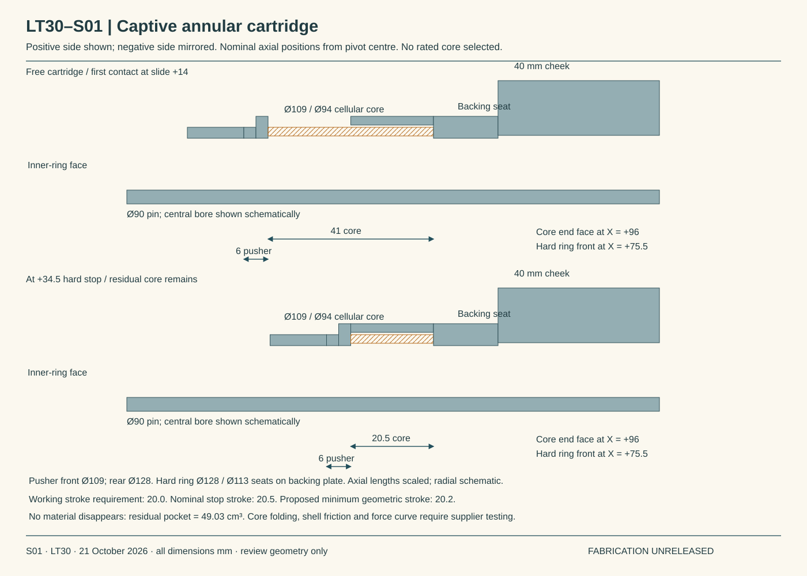
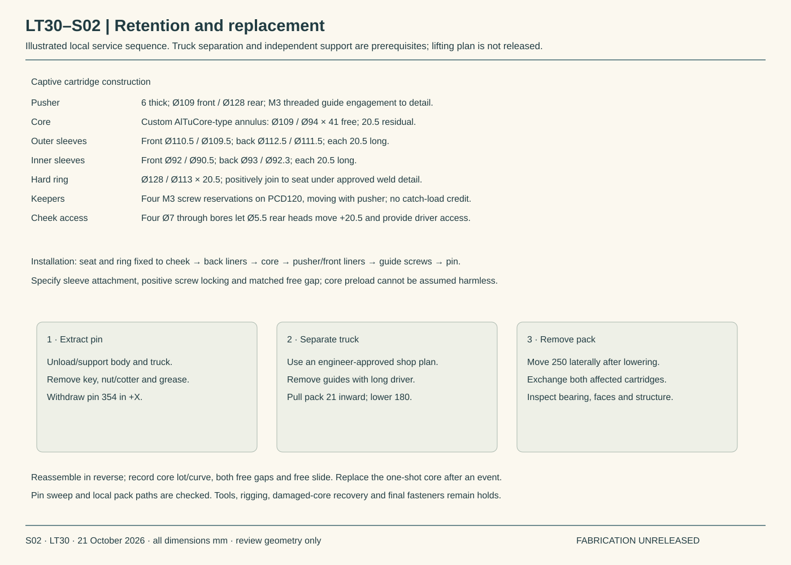
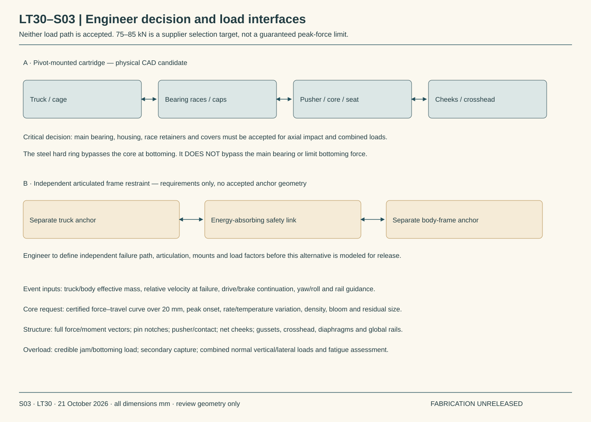

CURRENT LOCOMOTIVE REVIEW · LT 30
A cartridge with room for the crushed core
The revised restraint keeps a physical residual core, uses a separate hard ring, and includes a local removal route. The main bearing and housing still carry the shown catch load; an engineer must accept that path or replace it with an independent frame restraint.
Decision required before detailing proceeds
| Option | What is available | Unresolved acceptance |
|---|---|---|
| A · Pivot-mounted cartridge | Coordinated physical candidate and local installation/removal geometry. | Truck cage/caps → bearing races → inner-ring face → pusher/core → backing seat → cheeks/crosshead → frame. Bearing axial impact, caps/retainers and combined loads are unapproved. |
| B · Independent frame restraint | A defined alternative load-path requirement; no accepted anchors or 3D mechanism. | Separate truck/body anchors and articulated safety link must bypass the main pivot bearing. Engineer must define failure independence, articulation, loads, package and attachments. |
The hard ring bypasses the crush core at bottoming; it does not bypass the main bearing. Neither option is selected for fabrication. The running-gear engineer must define the credible link-failure event and choose the load path. No professional assessment has been received in this revision.
Physical cartridge and residual material
| Feature | Candidate geometry / consequence |
|---|---|
| Core | Custom corrugated cylindrical absorber, AlTuCore-type family reference only. Ø109 / Ø94 × 41 mm free; 20.5 mm residual. No product, foil, density or curve selected. |
| Axial chain, each side | Bearing half-width 35 + free gap 14 + pusher 6 + core 41 + backing 16 = cheek inner face 112. Hard ring front 75.5; seat face 96; cheek outer 152. Negative side mirrored. |
| Working / stop travel | Required working stroke 20.0. Nominal hard-stop travel 20.5 (offset±34.5). The core remains 21.0 thick at 20.0 compression and 20.5 thick at the stop. |
| Occupied material | Free envelope 98.05 cm³; residual pocket 49.03 cm³. Trial 0.10 kg core contains 37.04 cm³ of aluminum at 2700 kg/m³. Maximum solid-metal mass that fits residual pocket: 0.132 kg. This necessary volume bound does not establish crush performance. |
| Containment | Two 20.5 mm telescoping sections per sleeve. Outer front 110.5/109.5, rear 112.5/111.5; inner front 92/90.5, rear 93/92.3. Thin-wall attachment, seam sealing, tolerances, friction and outward/inward core bloom require a supplier-tested cartridge. |
| Pusher / guides | FrontØ109 respects the cited bearing abutment envelope; rearØ128 spreads load into core or hard ring. FourM 3 traveling guide screws onPCD 120; Ø5.5 rear heads slide through Ø7 cheek access bores. Corrected the initial fixed-guide collision. The simplified mesh holes are not a released thread detail. |
| Hard ring / seat | Ø128/Ø113 ×20.5 ring bears on the 16 mm backing seat. Positively join ring to seat and sleeves to their carriers under approved details. Catch force does not rely on the M 3 keeper screws. |
| Core force target | 75–85 kN requires nominal average core stress 31.36–35.54 MPa. This is a request, not a certified device rating. |
| Supplier reference | Plascore describes AlTuCore as a custom cylindrical absorber with specified ID/OD, about 1000–8000 psi crush strength and typical 55–70% crush stroke. The proposed 50% geometric compression is only a packaging choice; the application still requires test data. |
Tolerances and conditional margin
| Term | Proposed bounded allowance |
|---|---|
| Link geometry | Seven dimensions,128 corners per pose ×1,008 front/rear poses. Maximum finite-pose dimensional effect 0.797 mm. |
| Seat / ring / core / pusher | Cheek face 0.25 + backing thickness 0.10 + half ring width 0.05 + free core length 0.20 + pusher width 0.10 + keeper/endplay 0.10 mm. |
| Operating allocations | Wear 0.50 + differential thermal 0.312 + relative elastic displacement 1.00 + mapping 0.05 mm. These are not validated life, thermal or structural results. |
| Normal travel margin | 14 −6.586 archived displacement −3.459 stack = 3.955 mm conditional. An additional 2 mm review reserve leaves 1.955 mm. |
| Stroke tolerance | 41.0±0.20 core −20.5±0.10 hard-ring depth =20.5±0.30; minimum geometric stroke 20.2 mm. This does not include loss from early densification, jam, sleeve deformation or unapproved preload. |
| Assembly fit | Measure and match core, guide and seat stack; verify both free gaps and free slide. A long core can preload against retained pusher, and a short core introduces take-up. Specify approved matched shims/keeper adjustment only after supplier guidance. No manufacturing stack is released. |
The previous 4.16 mm margin is not carried forward as a confirmed result. LT 30 adds pusher and keeper allowances, reducing the conditional margin to 3.96 mm. Historical 6.586 mm travel remains a conservative comparator, not a new dynamic failure trajectory.
Energy and structure — demands, not ratings
The event screen uses the updated maximum sleeve-drag link-force proxy, an estimated two-body reduced mass and a worst-side free gap including the proposed tolerance/operating stack. It includes continued driving force during compression. A linear plateau is assumed; onset, rate effects, rebound and hard-stop impact are not solved.
| Initial relative speed | Trial plateau | Required stroke | Margin at 20 mm |
|---|---|---|---|
| 0.00 m/s | 75 kN | 17.18 mm | 123.5 J · conditional |
| 0.00 m/s | 85 kN | 13.98 mm | 323.5 J · conditional |
| 0.10 m/s | 75 kN | 17.55 mm | 107.3 J · conditional |
| 0.10 m/s | 85 kN | 14.28 mm | 307.3 J · conditional |
| 0.25 m/s | 75 kN | 19.49 mm | 22.3 J · conditional |
| 0.25 m/s | 85 kN | 15.86 mm | 222.3 J · conditional |
| 0.50 m/s | 75 kN | 26.43 mm | -281.5 J · exceeds requirement |
| 0.50 m/s | 85 kN | 21.52 mm | -81.5 J · exceeds requirement |
Inputs: drive proxy 31.251 kN; reduced mass 3240.3 kg; worst free gap 24.045 mm. Any excess energy at the stop requires a credible overload calculation. 85 kN is not a bound on a jammed or bottomed system.
| Structural screen | Updated demand / limitation |
|---|---|
| Longer pivot pin | 264 mm cheek-centre span; grossØ90 pin. Worst normal radial proxy 58.23 kN; bending 53.69 MPa; combined upper screen 54.75 MPa. Drilling, fillets, fits, contact, fatigue and allowable material strength excluded. |
| Pusher / seat | At 85 kN: Ø100–109 bearing-face average 57.54 MPa; hard-ring average 30.35 MPa. Actual pressure distribution and 6 mm stepped-pusher bending require analysis. |
| Gussets | 12 mm plate,45 mm cap leg and 210 mm cheek leg. Trial 6 mm double fillets; elastic line-weld peak 57.09 MPa at 85 kN. Full local stiffness, net cheek/access holes, weld ends and fatigue remain open. |
| Main rails | If 85 kN shared equally:42.5 kN axial and 7.327 kN·m incremental pitch moment per rail. Prior incremental stress 16.22 MPa does not include global vehicle bending, local walls, splices or dynamics. |
| Materials and fits | Retain proposed 4140 Q&T pin, C 93200 sleeve, A 572 Grade 50 plates; ground pin 89.970–89.990 and fitted sleeve bore 90.080–90.120 mm. Certificates, bearing approval, lubrication, interference, temperature and WPS remain held. |
Movement and service checks
| Scope | Result | Limits |
|---|---|---|
| Normal loads | 504/504 converged; mass 16,135.91 kg (+5.68 kg). Minimum driver wheel 4.973 kN. | 300 capacity-demand flags remain. Small-angle to finite-pose rebound discrepancy−0.019 mm remains. No approved adhesion, stability or operating radius. |
| New restraint steel | 70 exact local states, no positive-volume clashes: seven selected normal/curve/suspension cases ×two trucks ×normal/±24/±34.5 positions. | Core envelope excluded from steel clash count. Failed primary link omitted. Spring and roll hardware included. No tolerance-adjusted gaps or continuous/dynamic sweep. |
| Retained frame | 42 exact states, no clashes with retained main rails and pivot/body-link crossheads. | Both trucks and both ultimate directions, selected governing positions. Not every vehicle part or every pose. |
| Hoses and nearby hardware | 2,520 positions; 65,100,168 route/obstacle pairs; no screened overlaps. Minimum gap 32.50 mm. | 504 intact positions plus each truck separately at both±34.5 endpoints. Conservative boxes; hollow body shell, final port leads and hose-to-hose/twist/dynamics excluded. |
| Local service | 14 continuous local pin/pack sweeps clear checked solids. | Pin withdraws 354 mm; pack 21 inward,180 down,250 lateral. Cartridge exchange requires prior truck separation; no rigging, tool or damaged-core extraction approval. |
Constant-length flex construction remains within numerical tolerance; minimum sampled HP polyline bend radius 166.32 mm versus the 165 mm catalog reference. This is geometric screening, not hose-mechanics or finished-assembly acceptance. Failure poses freeze yaw, pitch, roll and suspension; actual loss-of-link movement must be solved by the running-gear engineer.
Supplier interfaces still open
| Interface | Confirmed status | Required next input |
|---|---|---|
| Absorber | Manufacturer family geometry/performance range only; no application-specific selection. | Certified curve/initial peak through 20 mm, residual size, density, tolerances, rate/temperature/aging, debris retention and replacement criteria. |
| Brake | No confirmed application torque/pressure/thermal rating. | Exact device, bracket pattern, control/failure response and reaction vectors. Update attachments only after acceptance. |
| Suspension bumper | No confirmed application force–travel or impact curve. | Installed height, curve, usable travel, temperature/rate limits and mounting reactions. Retain higher archived 5.765 kN demand until re-solved with real curve. |
| Pump / hose connections | Existing engine/PTO material retained; no new final pump-port/adapter drawing in searched replies. | Port threads and clocking, approved hose/fitting combination, pressure/temperature, foot/adapter geometry and support reactions. |
Supplier correspondence was rechecked on 22 October UTC /21 October local. Acknowledgments, routing and prior engine/PTO information do not close these application ratings. No substitute rating is invented.
Focused running-gear review request
- Select the main-bearing path or require a separate frame restraint. State the accepted bearing/cage/cap/race-retainer loads and failure modes.
- Define the credible failure event: relative speed, continued traction/braking, effective masses, orientation changes, load factors and post-failure wheel guidance.
- Review 75–85 kN core target and 20 mm working stroke; define onset/overload limits and reject or revise the package if required.
- Check complete local/global load paths, including pusher bending, new cheek bores, pin notches, welds, rails, fatigue and jam/bottoming cases.
- Confirm tolerances, core/keeper adjustment, positive retention and an accessible truck-separation/replacement method.
Review sections and evidence



Review summary · Energy and geometry (gzip JSON) · 1,008 normal interfaces (gzip CSV) · Tolerance and friction probes · Mass ledger · Hose endpoint checks · Local restraint checks · Frame checks · Local removal sweeps
Primary references
Plascore energy absorption brochure — cylindrical AlTuCore customization, family strength and stroke ranges, precrush and densification concepts. ACE energy calculation basis — include driving work. Parker GlobalCore brochure — retained hose family dimensions/bend radius. LT 29 reference and specification record retains material and bearing sources. None is an approval of this assembly.